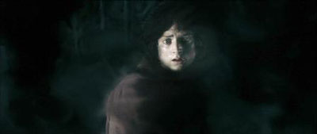

Suggestions
Unfortunately, due to the ability to turn the wearer into invisible, the Ring cannot be used as a jewelry. But it might be:
- used as a proposal gift (although your future fiance don't necessarily have to wear it).
- used to do some pranks or to perform magic tricks (or real magic, if you prefer).
- added into your collection of precious mystical artifacts.
- an object for scientific study and research.
- a substitute component in a mechanical machine.
Note: The One Ring is not a product for:
- Children under 16 years old.
- People who suffer mental illness.
We advised you to use it only on very special occasions. Also, please ensure that you've read the following descriptions, especially the Side Effects, very carefully before using it.
How Does It Work?
When a typical person put on the ring, he would be partly "shifted" out of the physical realm into the spiritual realm, walking its threshold. A side effect (but usually the first effect noticed) of this was that it made the wearer invisible to physical beings like living men, but highly visible to spiritual beings like Ringwraiths. This "shadow world" was the world the Wraiths were forced to live in but it was also a world in which the Calaquendi (Elves of Light) held great power. It is likely that a person trying to hide from such Elves (few still dwelt in Middle-earth in the Third Age) using the ring would be easily seen.
Frodo wearing the One Ring
Side Effects
For mortals, the ring had several side effects, most of them negative. Like the Nine rings of Men without making the owner an apparition, it would extend lifespan indefinitely, but the person’s soul would "feel all thin, sort of stretched ... like butter that has been scraped over too much bread" (as Bilbo Baggins put it). One possible positive effect was that the Ring may have granted the wearer some understanding of the speech of evil creatures. While wearing the Ring, Bilbo was able to understand the giant spiders of Mirkwood, and Samwise Gamgee was able to understand the Black Speech being used by the Orcs of Mordor.
Gandalf held that if the Ring was worn too frequently, the wearer would become wraith-like over time; entirely subsumed into the spirit world. This would depend largely on that person's race and inner nature. Once the Ring was out of their possession, the mortal being would begin to age again. If, however, they merely kept it without using it, they were less under its power.
Because the ring was created by Sauron it became evil in itself. The ring caused those who possessed it to become obsessed with it, so much so that they might kill anyone who showed too much interest in it or attempted to touch the Ring. With an evil will of its own, the Ring would make attempts to return to its Master. It could "call out" subliminally to other people, in an attempt to get them to pick it up or possibly kill the current owner. It was also capable of slipping unnoticed from the owner's finger, leaving him vulnerable to attack or to gain a new owner that would help get the Ring back to Sauron. Frodo Baggins was warned by Bilbo that the Ring tended to "slip away" at odd times, and compensated for this by wearing it on a chain around his neck.
In the case of Sméagol/Gollum, it didn't make him evil or corrupt so much as ugly and obsessive with the ring. Even the Elf-Queen Galadriel was able to postulate the unpleasant physical effect the Ring would have on her (beautiful, but in a terrible way) in the long-term.

Sméagol (Gollum) after nearly 500 years keeping the One Ring
Distant from Mordor, the Ring was hampered, unless its Master or other beings of power (such as Ringwraiths near the Inn at Bree) were calling to it, when it would try to respond. But in Mordor it grew so powerful that when Frodo stood on Mount Doom, Sam had a flash of sight in which not only was the Ring seen through Frodo's garments, but spoke of itself to Smeagol:
"Begone, and trouble me no more! If you touch me ever again, you shall yourself be cast into the Fire of Doom."
Besides the partial, if not complete, loss of sanity over time, there were also physical consequences of carrying the ring. The skin becoming pale and thin, with the veins clearly visible, darkened eyes, teeth and nails, and to most extreme cases, such as Gollum, loss of hair and tissue, leaving the body nearly corpse-like with heavy breathing and rash voice. Although these effects were seen in two hobbits (evident in Gollum and slight in Frodo), the effects are unknown in other races, as none have held the ring long enough for them to become apparent.
Fate of The Ring-bearers
Of the several bearers of the One Ring, three were still alive following the One Ring's destruction: Bilbo Baggins, Frodo Baggins, and Samwise Gamgee (Although it becomes five when you count Tom Bombadil and Gandalf. Sauron can be considered as well, since he did not truly die according to Gandalf). Bilbo, having borne the Ring longest of the three, had reached a very advanced age for a Hobbit. Frodo suffered both physical and psychological scars from his strenuous quest to destroy the Ring. Samwise, having only briefly kept the Ring was affected the least and appeared to carry on a normal life following the Ring's destruction.
In consideration of the trials the Ring-bearers had endured, special dispensation was granted them by the Valar to travel to Tol Eressea, the Elvenhome; though not the Undying Lands themselves, where it was hoped they could find rest and healing. At the close of The Return of the King, Bilbo and Frodo embark for the voyage to the West along with Galadriel, Elrond, and many of their folk, as well as Gandalf. Near the end of his life, Samwise is also said to have sailed to Eressea. Tolkien in one of his letters described the process as a period of extended life and healing, after which, their spiritual scars cured, they would die in peace. No mortal can set foot in the Undying Lands.